| Manuscript / Publication Title | Venue / Framework | Year | Status | Verified Link |
|---|---|---|---|---|
| Fake news detection using deep learning models: A novel approach Sachin Kumar, Rohan Asthana, Shashwat Upadhyay, N. Upreti, M. Akbar |
Transactions on Emerging Telecommunications Technologies (Wiley) | 2020 | Published |
DOI: 10.1002/ett.3767 |
| Semantic Drift Before Inference: A Preprocessing Attack Surface in Vision–Language Models Shashwat Upadhyay |
Research Working Paper & Reproducible Testbed | 2026 | In Progress |
Codebase & Paper |
| PhysioFM: Optimization Diagnostics and Failure Analysis of Hierarchical Foundation Models in rPPG Shashwat Anil Kumar Upadhyay |
Master Research Dossier & PyTorch Framework | 2026 | In Progress |
Research Dossier |
| Domain | Core Tools & Frameworks |
|---|---|
| Programming | Python 3.10+ · C++ 17/20 · TypeScript · JavaScript · SQL |
| AI & Machine Learning | PyTorch · Hugging Face Transformers · Swin-V2 · TimeSformer · Scikit-learn |
| Computer Vision | OpenCV · YOLO (v8/v9) · CLIP · Waveform Extraction (BVP) · Spectral Analysis |
| Cyber & ML Security | VLM Preprocessing Auditing · Isolation Forests (Zero-Label) · Threat Modeling · OSINT |
| Research & Engineering | LaTeX · Docker · SUMO Simulation · Unity 3D Engine · Git & CI/CD Actions |

GitHub · LinkedIn · ResearchGate · Email · Bento
RESEARCHING INTELLIGENCE. BUILDING SYSTEMS. © 2026 SHASHWAT UPADHYAY.